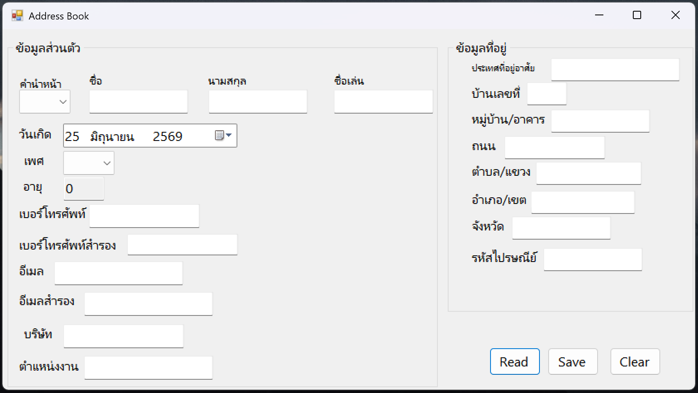
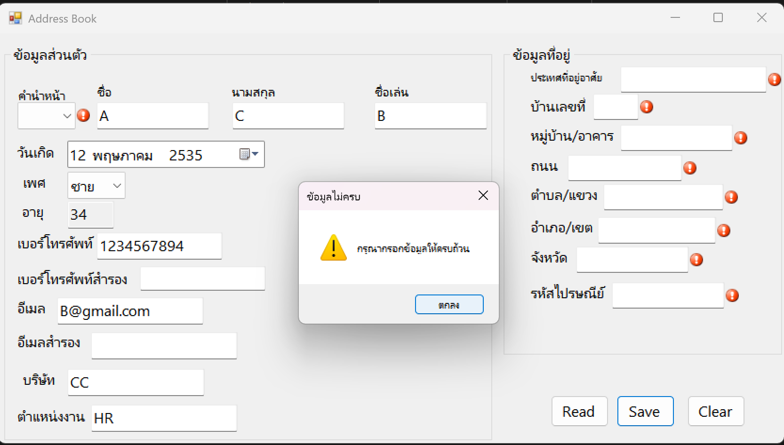

← กลับไปหน้า Portfolio
Table: hw02_address_book
HW2: Address Book — C# WinForms
โปรแกรมสมุดรายชื่อ (Address Book) ที่พัฒนาด้วย C# WinForms รับข้อมูลผู้ติดต่อ เช่น คำนำหน้าชื่อ ชื่อ-นามสกุล เพศ วันเกิด และข้อมูลติดต่ออื่น ๆ แล้วบันทึกลงไฟล์ contacts.csv

ฟีเจอร์หลัก
- เลือกคำนำหน้าชื่อ (นาย/นาง/นางสาว/เด็กชาย/เด็กหญิง) แล้วเติมเพศให้อัตโนมัติ
- คำนวณอายุอัตโนมัติจากวันเดือนปีเกิดที่เลือก
- บันทึกและอ่านข้อมูลผู้ติดต่อจากไฟล์ CSV
- ตรวจสอบความถูกต้องของข้อมูล (Validation) ก่อนบันทึก พร้อมแจ้งเตือนช่องที่ยังไม่ได้กรอก

สิ่งที่ได้เรียนรู้
การออกแบบฟอร์มให้ใช้งานง่ายด้วย ComboBox และ DateTimePicker การจัดการ Event เช่น SelectedIndexChanged เพื่อเติมค่าที่สัมพันธ์กันโดยอัตโนมัติ และการเขียน Validation ที่แจ้งผู้ใช้ได้ชัดเจนด้วย ErrorProvider